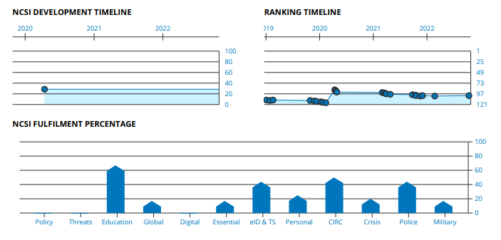
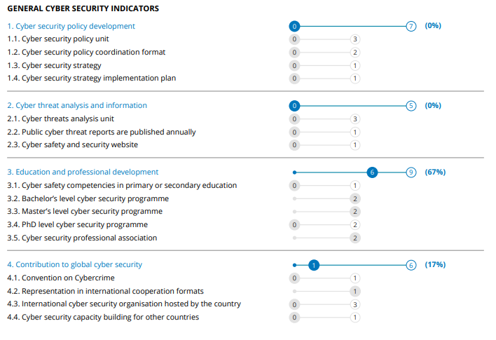
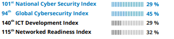

Cybercrime is any criminal activity that involves a computer, networked device or a network. The criminal activity includes committing fraud, trafficking in child pornography and intellectual property, stealing identities, or violating privacy. It is one of the emerging crime around the world.
While most of the cybercrimes are carried out in order to generate profit for the cybercriminals, some cybercrimes are carried out against computers or devices directly to damage or disable them. Others use computers or networks to spread malware, illegal information, images or other materials.
The U.S. Department of Justice(DOJ) divides cybercrime into three categories
-
Crimes in which the computing device is targeted.
For example: to gain a network access. -
Crimes in which the computer is used as a weapon.
For example: to launch a denial of service(DOS) attack -
Crimes in which the computer is used as an accessory to a crim
For example: using a computer to store illegally obtained data.
The Council of Europe Convention on Cybercrime, to which the U.S. is a signatory, defines cybercrime as a wide range of malicious activities, including the illegal interception of data, system interferences that compromise network integrity and availability, and copyright infringements.
Cybercrime attacks can begin whenever there is digital data, opportunity and motive. There are various types of cybercrime. Some of them are as follows:
Cyberextortion:
A crime involving an attack or threat of an attack coupled with a demand for money to stop the attack. One form of cyberextortion is the ransomware attack. Here, the attacker gains access to an organization's systems and encrypts its documents and files -- anything of potential value -- making the data inaccessible until a ransom is paid.
Identity Theft:
An attack that occurs when an individual accesses a computer to glean a user's personal information, which they then use to steal that person's identity or access their valuable accounts, such as banking and credit cards. Cybercriminals buy and sell identity information on darknet markets, offering financial accounts, as well as other types of accounts, like video streaming services, webmail, video and audio streaming, online auctions and more.
Credit card fraud:
An attack that occurs when hackers infiltrate retailers' systems to get the credit card and/or banking information of their customers. Stolen payment cards can be bought and sold in bulk on darknet markets, where hacking groups that have stolen mass quantities of credit cards profit by selling to lower-level cybercriminals who profit through credit card fraud against individual accounts.
Cyber espionage:
Cyber espionage is a form of cyber attack that steals classified, sensitive data or intellectual property to gain an advantage over a competitive company or government entity.
Software piracy:
An attack that involves the unlawful copying, distribution and use of software programs with the intention of commercial or personal use. Trademark violations, copyright infringements and patent violations are often associated with this type of cybercrime.
Denial-of-Service(DOS) attack:
A Denial-of-Service (DoS) attack is an attack meant to shut down a machine or network, making it inaccessible to its intended users. DoS attacks accomplish this by flooding the target with traffic, or sending it information that triggers a crash. In both instances, the DoS attack deprives legitimate users (i.e. employees, members, or account holders) of the service or resource they expected.
Cyber Law deals with following areas:
- Computer crime such as Hacking & Cracking.
- Telecommunication Law looks after the emission, transmission, and reception of signals & many others.
- Digital Signature
- Internet of Things (IoT)
- Identity Theft
Due to several changes in cyberlaw brought on by time and technological advancement, the government of Nepal has established a number of policies on the subject, including:
- Jashoosi Ain 2018 B.S. (Detective Act)
- Patent, design ra trademark Ain 2022 B.S. (Patent, Design and Trademark Act)
- Chalchitra Act 2026 B.S. (Film Act)
- Likhathauko Gopayiyata Sambandhi Ain 2039 B.S. (Document Privacy Act)
- Chaphakhanna tatha Prakashan Sambhandhi Ain 2048 B.S. (Press and Publication Act)
- Nepal Press Council Ain 2048 B.S. (Nepal Press Council Act)
- Rastriya Prasaran Ain 2049 B.S. (National Transmission Act)
- Sharamjibhi Patrakar Ain 2051 B.S. (Journalists Act)
- Pratilipi Aadhikar Ain 2059 B.S. (Copyright Act)
The Government of Nepal issued electronic transaction ordinance 2061 in September 2004 as ordinance. In 2004, Nepal passed the much-awaited Electronic Transaction and Digital Signature Act Ordinance known as Cyber Law of Nepal. The government also passed the Electronic Transactions Act (ETA), 2063 (2008), and Electronic Transaction Regulations (ETR) in 2064 (2007). The act is divided into 12 sections and 80 clauses with detailed information on role and rights of regulator, certification authority, customer, government and all the concerned stakeholders.
ETA, 2063 establish legal provisions for the authentication and regularization of the recognition, validity, integrity, and reliability of the generation, production, processing, storage, communication, and transmission system of electronic records by ensuring the reliability and security of transactions carried out through electronic data exchange or any other means of electronic communications.
Electronic Transaction Act 2063 has 12 chapters:
- Preliminary Statement
- The provisions related to electronic records and digital signatures
- Provisions relating to Dispatch, Receipt, and Acknowledgement of Electronic Records.
- Provisions relating to controller and Certifying Authority
- Provisions relating to Digital Signature and Certificates
- Functions, Duties and Rights of Subscriber
- Electronic record and government use of digital signature
- Provisions relating to network service
- Offence relating to computer
- Provisions relating to Information Technology Tribunal
- Provisions relating to Information technology Appellate Tribunal
- Miscellaneous
| Crime | Punishment and Imprisonment |
|---|---|
| To pirate, destroy or alter computer source. | Two hundred thousand rupees punishment or 3-year imprisonment. |
| Unauthorized access in computer materials. | Two hundred thousand rupees punishment or 3-year imprisonment. |
| Damage to any computer and information system. | Two hundred thousand rupees punishment or 3-year imprisonment. |
| Publication illegal materials in electronic form. | One hundred thousand rupees punishment or 5-year imprisonment. |
| Confidentiality to divulge. | One hundred thousand rupees punishment or 2-year imprisonment. |
| To inform false statement. | One hundred thousand rupees punishment or 5-year imprisonment. |
| Submission or display of false license of certificates. | One hundred thousand rupees punishment or 5-year imprisonment. |
Children's Act, 1992, promulgated to protect and promote children's rights, to far extent has addressed the prohibition of child pornography broadly. Section 16(2) of the act prohibits making photograph of child for the purpose of engaging a child in immoral profession. Section 16(3) prohibits publication, exhibition or distribution of photograph or personal events or description of a child tarnishing the character of such child. Section 53 of the act provides punishment for the person committing such crime including seizure of the photograph and reasonable compensation to children for adverse effect on character of child.
Copyright Act, 2002 has addressed the crime related to copyright where the act has protected copyright of expression of ideas including computer program. The act has also stipulated punishment for breach of copyright protection such as reproduction of copies of work, advertise or publicize by copying a work belonging to another person with a motive of taking advantage of reputation gained by that work, make work of other by changing the form and language of work with motive of deriving economic benefit, to import/produce/rent any equipment or device prepared with intention of circumventing any device and other act related with infringement of copyright.
Consumer Protection Act, 1998 has prohibited unfair trade practice where the act defines "Unfair trade practices" as the sale or supply of consumer goods or services by making false or misleading claims about their actual quality, quantity, price, measurement, design, make etc., or the sale or supply of consumer goods produced by others by affecting their quality, quantity, price, measurement, design, make, etc.
This act is the first legislation in Nepal to protect the right to privacy of its people, and define personal information. It protects the privacy of body, family life, residence, property, and communication. It puts the responsibility on public entities to protect the personal data of individuals. They cannot transfer such data to anyone without the consent of the owner. The Act prescribes a general punishment for violation of privacy as three years of imprisonment, or a fine of NPR 30,000, or both.
Banking Offence and Punishment Act, 2008 is the law governing banking operation and transaction. Section 6 of the act has prohibited obtaining or making payment by way of abuse or unauthorized use of a credit card, debit card, automated teller machine (ATM) card or other electronic means. The person committing this crime shall be punished with recovery of amount and punishment up to five years depending on the amount of money.
In order to protect ourselves from the perils of cybercrime, the following preventative actions can be taken:
- It is required to install an antivirus program. An antivirus program is designed to safeguard users against cybercrime. Modern programs monitor the machine’s data for harmful content and give real-time security against dangers like phishing.
- Making use of a Virtual Private Network. A VPN connection will protect your online privacy. It’s an important tool for privacy, which protects people from identity theft.
- Unsolicited emails, text messages, and phone calls should be avoided, especially if they utilize the crisis to coerce people into circumventing standard security safeguards.
- Change the Wi-Fi network’s default password to something more secure. Limit the number of devices that may connect to the Wi-Fi network and only allow trustworthy devices to connect.
- Use lengthy and complicated passwords that incorporate numbers, letters, and special characters
- Make sure to update all the systems and programs, as well as to install and maintain an antivirus software up to date.
- Data backup should be a routine procedure since data may be quickly destroyed, infected, or manipulated.
To effectively combat cybercrime, multidimensional public-private alliances involving authorities, the digital tech industry, information security groups, internet firms, and financial institutions are required. Cyber thieves, unlike their counterparts in the physical world, do not compete for dominance or control. Instead, they collaborate to enhance their talents and even assist one another with new chances. As a result, traditional crime-fighting strategies cannot be employed to combat cybercrime in India. Mentioned below are some steps to prevent cybercrime:
- Use complex passwords: Use various login details combinations for separate accounts and avoid writing them down.
- Keeping online profiles secret: Make sure to keep your social networking profiles (Facebook, Twitter, YouTube, and so on) private. Make sure to double-check your security settings. Take caution with the information you put on the internet. Once it’s on the Internet, it’s there for good.
- Safeguard mobile devices: Many individuals are unaware that their mobile devices are exposed to dangerous software such as computer viruses. An individual should only download software from reputable sites. It is also critical that your operating system is kept up to date. Install anti-virus software and utilize a secure lock screen in addition. Otherwise, if you misplace your phone or lay it down for a few seconds, anyone may see all of your personal information on it. Someone may even install malicious software that uses GPS to follow your every step.
- Safeguarding data: Encrypt sensitive files such as financial documents and tax returns, to protect your data.
- Secure online identity: When it comes to protecting one’s identity online, an individual should be vigilant. When providing personal information such as your name, address, phone number, and/or financial information on the Internet, you must exercise extreme caution. While making an online purchase, etc., be sure to check whether the websites are safe. This includes turning on your privacy settings while using or visiting social networking sites.
- Safeguarding computers with security software: For basic internet security, several types of security softwares are required. Firewall and antivirus software are key pieces of security software. A firewall is typically the first line of defence for your computer. It governs who can communicate, and access the computer via the internet. Assume a firewall to be a type of ‘policeman’ who monitors all data attempting to flow to and from the computer via the Internet, permitting transactions that it knows are secure while preventing ‘bad’ traffic such as cyberattacks.
According to the latest Global Cybersecurity Index (GCI) report Nepal has made a significant progress in its cybersecurity arena by moving up 15 spots in the global score. Nepal’s cybersecurity index ranked it at 109 in 2018 which has now progressed to 94 in 2020 as per the GCI report 2021 published recently by International Telecommunications Union (ITU).
According to National Cyber Security Index (NCSI) Nepal lies at 101th rank in Cyber Security
 Different ranking provided by different Index for Cyber Security is shown in the following figure:
